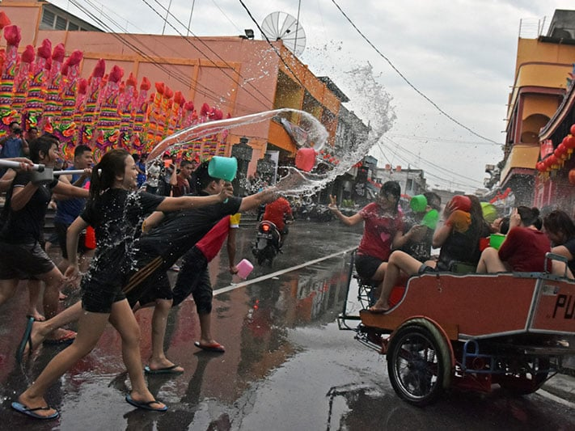

5 Exciting Chinese New Year Experiences in and Around Riau Archipelago
Mon, 12 February 2018
January has passed, fireworks have ended and all the confetti have been swept clean, and when you think all of the New Year's celebration hype have receded, there is going to be another party as the Chinese New Year is just around the corner. On February 16th, 2018, Chinese all over the globe will celebrate the coming of the year of the earth dog 2569 with all sorts of festivities. In Indonesia, the celebration is more familiarly known as Imlek and is held in Chinese communities in most major cities across the archipelago. After centuries of interaction, Chinese culture has blended with local traditions, including in Batam, Bintan, as well as other islands around Riau Islands. Are you ready to find out what exciting Chinese New Year experience awaits in and around Riau Archipelago? Check this list out!
1 | Hunt for Imlek knick-knacks at Tanjungpinang Imlek Market

The fanfare of the Chinese New Year are felt weeks before the celebration, especially in Tanjung Pinang in Bintan Island, the capital of Riau Province. Every year, people flock to a special Imlek market set up on Jalan Merdeka. The market is easy to find as it is located at the heart of the city. It is the best place to hunt for the Chinese New Year necessities, such as traditional Chinese clothes Cheongsam, praying necessities, paper lanterns, accessories, as well as all sort of other Imlek ornaments. There are also booths that sell various Chinese food and beverages to keep you energized during your shopping spree.
2 | Visit the majestic Vihara Ksitigarbha Bodhisattva
When you are in Tanjungpinang city to celebrate the Chinese New Year, why not pay a visit to one of the most fascinating temples in Indonesia, located about 10 kilometer from the heart of the city. The Vihara Ksitigarbha Bodhisattva or the temple of 500 Lohan statues is an amazing work of art. Lohan is a term for a person whose souls have attained nirvana. What makes it special is that each of the lifesize sculpture has unique characteristics, facial features, and postures. The beauty and uniqueness of this temple is perfect for amateur as well as professional photographers.
3 | Explore the vibrant island-city of Batam and shopping spree in Nagoya Superblock
The island-city of Batam is the main hub of Riau Islands and will most likely be your gateway to all the splendors in the region. As the third busiest entry port to Indonesia, next to Bali and Jakarta, Batam promises a vibrant nightlife, reasonably priced fresh seafood, beautiful golf courses, and a whole lot more. For shopaholics, Batam is definitely the perfect city for you. Just head down to the Nagoya Superblock area and get ready to embark on a duty-free shopping spree. The shopping center has 450 kiosks and 170 shops as well as a hypermarket complex. International brands, from electronic, gadgets, to fashion and accessories are available here.
4 | Visit Ho Ann Kiong, the oldest Chinese temple in Riau
Ho Ann Kiong is Chinese Taoism temple located in Selatpanjang, a small and remote town in Tebing Tinggi Island, Riau Province. You can get here from Batam on a three hours speedboat ride. Ho Ann Kiong is claimed to be the oldest Chinese temples in Riau. The temple is believed to be 150 years old, but there is no record of the exact date. Being so old, the temple is still well-maintained. The temple is painted in red and decorated with Chinese decorations. Vintage Chinese roof and windows covered the facade of the temple. During Imlek, Chinese-Indonesian wanderers from this island will return to the island to celebrate the festivity.
5 | Engage in a fun and exciting splashing war in Selatpanjang
The people of Selatpanjang probably has the most exciting way of celebrating Chinese New Year: a water splashing war also known as the Cian Cui tradition. During the first six days of Imlek, everyone in the city, including Chinese-Indonesians, residents, visitors, tourists will splash each other using water balloons, plastic bags, buckets, water guns along a predetermined route. Thousands of tourists will flock to Selatpanjang just to participate in this fun tradition, so book your hotel early.
Situated just a short ferry ride away from Singapore and Malaysia, Riau Islands offers all sort of exciting Chinese New Year celebrations. Be sure to book your flight, ferry ride, and hotel early because Imlek celebration in the region is among the most vibrant festivities in Indonesia, if not South East Asia.
Recent Events

Riau Islands Marine Festival 2018
Ready to explore Riau Islands' magnificent marine wonders? ...

Tour De Bintan 2018
While the 2018 edition marked the eighth running of the Tour de Bintan, ....

Bintan Triathlon 2018
The 14th running edition of Asia's premier multisports festival, ...
Recent News

Things To Do at Tanjungpinang on Ramadhan
Tanjung Pinang is the capital city of the Riau Islands. It's not surprising to encounter a lot of diversity here...
5 Exciting Chinese New Year Experiences in and Around Riau Archipelago
January has passed, fireworks have ended and all the confetti have been swept clean, and when you think all of the New Year’s ....